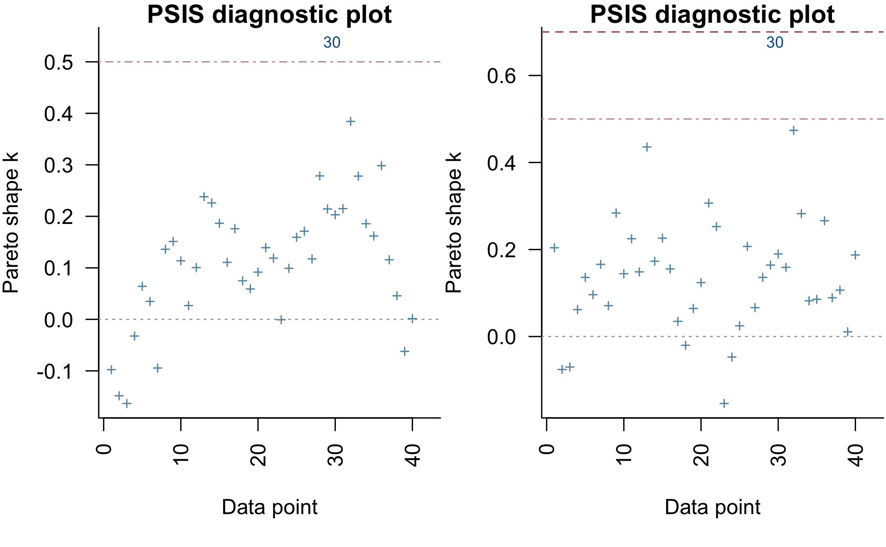

This vignette provides an overview of how to use the functions in the rstanarm package that focuses on commonalities. The other rstanarm vignettes go into the particularities of each of the individual model-estimating functions.
The goal of the rstanarm package is to make Bayesian estimation routine for the most common regression models that applied researchers use. This will enable researchers to avoid the counter-intuitiveness of the frequentist approach to probability and statistics with only minimal changes to their existing R scripts.
The four steps of a Bayesian analysis are
Step 1 is necessarily model-specific and is covered in more detail in the other vignettes that cover specific forms of the marginal prior distribution and likelihood of the outcome. It is somewhat more involved than the corresponding first step of a frequentist analysis, which only requires that the likelihood of the outcome be specified. However, the default priors in the rstanarm package should work well in the majority of cases. Steps 2, 3, and 4 are the focus of this vignette because they are largely not specific to how the joint distribution in Step 1 is specified.
The key concept in Step 3 and Step 4 is the posterior predictive distribution, which is the distribution of the outcome implied by the model after having used the observed data to update our beliefs about the unknown parameters. Frequentists, by definition, have no posterior predictive distribution and frequentist predictions are subtly different from what applied researchers seek. Maximum likelihood estimates do not condition on the observed outcome data and so the uncertainty in the estimates pertains to the variation in the sampling distribution of the estimator, i.e. the distribution of estimates that would occur if we could repeat the process of drawing a random sample from a well-defined population and apply the estimator to each sample. It is possible to construct a distribution of predictions under the frequentist paradigm but it evokes the hypothetical of repeating the process of drawing a random sample, applying the estimator each time, and generating point predictions of the outcome. In contrast, the posterior predictive distribution conditions on the observed outcome data in hand to update beliefs about the unknowns and the variation in the resulting distribution of predictions reflects the remaining uncertainty in our beliefs about the unknowns.
For the sake of discussion, we need some posterior distribution to draw from. We will utilize an example from the HSAUR3 package by Brian S. Everitt and Torsten Hothorn, which is used in their 2014 book A Handbook of Statistical Analyses Using R (3rd Edition) (Chapman & Hall / CRC). This book is frequentist in nature and we will show how to obtain the corresponding Bayesian results.
The model in section 6.3.2 pertains to whether a survey respondent agrees or disagrees with a conservative statement about the role of women in society, which is modeled as a function of the gender and education of the respondents. The posterior distribution — with independent priors — can be written as \[f\left(\alpha,\beta_1,\beta_2|\mathbf{y},\mathbf{X}\right) \propto f\left(\alpha\right) f\left(\beta_1\right) f\left(\beta_2\right) \times \prod_{i=1}^J { g^{-1}\left(\eta_i\right)^{y_i} \left(1 - g^{-1}\left(\eta_i\right)\right)^{n_i-y_i}},\] where \(\eta_i = \alpha + \beta_1 \mbox{education}_i + \beta_2 \mbox{Female}_i\) is the linear predictor and a function of an intercept \(\left(\alpha\right)\), a coefficient on the years of education \(\left(\beta_1\right)\), and an intercept-shift \(\left(\beta_2\right)\) for the case where the respondent is female. These data are organized such that \(y_i\) is the number of respondents who agree with the statement that have the same level of education and the same gender, and \(n_i - y_i\) is the number of such people who disagree with the statement. The inverse link function, \(p = g^{-1}\left(\eta_i \right)\), for a binomial likelihood can be one of several Cumulative Distribution Functions (CDFs) but in this case is the standard logistic CDF, \(g^{-1}\left(\eta_i \right)=\frac{1}{1 + e^{-\eta_i}}\).
Suppose we believe — prior to seeing the data — that \(\alpha\), \(\beta_1\), and \(\beta_2\) are probably close to zero, are as likely to be positive as they are to be negative, but have a small chance of being quite far from zero. These beliefs can be represented by Student t distributions with a few degrees of freedom in order to produce moderately heavy tails. In particular, we will specify seven degrees of freedom. Note that these purported beliefs may well be more skeptical than your actual beliefs, which are probably that women and people with more education have less conservative societal views.
In this vignette we use the term “prior beliefs” to refer in generality to the information content of the prior distribution (conditional on the model). Sometimes previous research on the topic of interest motivates beliefs about model parameters, but other times such work may not exist or several studies may make contradictory claims. Regardless, we nearly always have some knowledge that should be reflected in our choice of prior distributions. For example, no one believes a logistic regression coefficient will be greater than five in absoluate value if the predictors are scaled reasonably. You may also have seen examples of so-called “non-informative” (or “vague”, “diffuse”, etc.) priors like a normal distribution with a variance of 1000. When data are reasonably scaled, these priors are almost always a bad idea for various reasons (they give non-trivial weight to extreme values, reduce computational efficiency, etc). The default priors in rstanarm are designed to be weakly informative, by which we mean that they avoid placing unwarranted prior weight on nonsensical parameter values and provide some regularization to avoid overfitting, but also do allow for extreme values if warranted by the data. If additional information is available, the weakly informative defaults can be replaced with more informative priors.
The likelihood for the sample is just the product over the \(J\) groups of \[g^{-1}\left(\eta_i \right)^{y_i} \left(1 - g^{-1}\left(\eta_i \right)\right)^{n_i-y_i},\] which can be maximized over \(\alpha\), \(\beta_1\), and \(\beta_2\) to obtain frequentist estimates by calling
data("womensrole", package = "HSAUR3")
womensrole$total <- womensrole$agree + womensrole$disagree
womensrole_glm_1 <- glm(cbind(agree, disagree) ~ education + gender,
data = womensrole, family = binomial(link = "logit"))
round(coef(summary(womensrole_glm_1)), 3) Estimate Std. Error z value Pr(>|z|)
(Intercept) 2.509 0.184 13.646 0.000
education -0.271 0.015 -17.560 0.000
genderFemale -0.011 0.084 -0.136 0.892The p-value for the null hypothesis that \(\beta_1 = 0\) is very small, while the p-value for the null hypothesis that \(\beta_2 = 0\) is very large. However, frequentist p-values are awkward because they do not pertain to the probability that a scientific hypothesis is true but rather to the probability of observing a \(z\)-statistic that is so large (in magnitude) if the null hypothesis were true. The desire to make probabalistic statements about a scientific hypothesis is one reason why many people are drawn to the Bayesian approach.
A model with the same likelihood but Student t priors with seven degrees of freedom can be specified using the rstanarm package in a similar way by prepending stan_ to the glm call and specifying priors (and optionally the number of cores on your computer to utilize):
library(rstanarm)
womensrole_bglm_1 <- stan_glm(cbind(agree, disagree) ~ education + gender,
data = womensrole,
family = binomial(link = "logit"),
prior = student_t(df = 7),
prior_intercept = student_t(df = 7),
chains = CHAINS, cores = CORES, seed = SEED)
womensrole_bglm_1stan_glm
family: binomial [logit]
formula: cbind(agree, disagree) ~ education + gender
num. obs: 42
------
Estimates:
Median MAD_SD
(Intercept) 2.5 0.2
education -0.3 0.0
genderFemale 0.0 0.1
Sample avg. posterior predictive
distribution of y (X = xbar):
Median MAD_SD
mean_PPD 24.3 0.8
------
For info on the priors used see help('prior_summary.stanreg').As can be seen, the “Bayesian point estimates” — which are represented by the posterior medians — are very similar to the maximum likelihood estimates. Frequentists would ask whether the point estimate is greater in magnitude than double the estimated standard deviation of the sampling distribution. But here we simply have estimates of the standard deviation of the marginal posterior distributions, which are based on a scaling of the Median Absolute Deviation (MAD) from the posterior medians to obtain a robust estimator of the posterior standard deviation. In addition, we can use the posterior_interval function to obtain a Bayesian uncertainty interval for \(\beta_1\):
ci95 <- posterior_interval(womensrole_bglm_1, prob = 0.95, pars = "education")
round(ci95, 2) 2.5% 97.5%
education -0.3 -0.24Unlike frequentist confidence intervals — which are not interpretable in terms of post-data probabilities — the Bayesian uncertainty interval indicates we believe after seeing the data that there is a \(0.95\) probability that \(\beta_2\) is between ci95[1,1] and ci95[1,2]. Alternatively, we could say that there is essentially zero probability that \(\beta_2 > 0\), although frequentists cannot make such a claim coherently.
Many of the postestimation methods that are available for a model that is estimated by glm are also available for a model that is estimated by stan_glm. For example,
cbind(Median = coef(womensrole_bglm_1), MAD_SD = se(womensrole_bglm_1)) Median MAD_SD
(Intercept) 2.511721939 0.19362514
education -0.271503131 0.01595837
genderFemale -0.007969803 0.08154524summary(residuals(womensrole_bglm_1)) # not deviance residuals Min. 1st Qu. Median Mean 3rd Qu. Max.
-0.3062319 -0.0354536 -0.0021802 0.0007276 0.0669976 0.2824652
NA's
1 cov2cor(vcov(womensrole_bglm_1)) (Intercept) education genderFemale
(Intercept) 1.0000000 -0.94264345 -0.22891806
education -0.9426435 1.00000000 -0.02283533
genderFemale -0.2289181 -0.02283533 1.00000000rstanarm does provide a confint method, although it is reserved for computing confidence intervals in the case that the user elects to estimate a model by (penalized) maximum likelihood. When using full Bayesian inference (the rstanarm default) or approximate Bayesian inference the posterior_interval function should be used to obtain Bayesian uncertainty intervals.
The launch_shinystan function in the shinystan package provides almost all the tools you need to visualize the posterior distribution and diagnose any problems with the Markov chains. In this case, the results are fine and to verify that, you can call
launch_shinystan(womensrole_bglm_1)which will open a web browser that drives the visualizations.
For the rest of this subsection, we focus on what users can do programatically to evaluate whether a model is adequate. A minimal requirement for a Bayesian estimates is that the model should fit the data that the estimates conditioned on. The key function here is posterior_predict, which can be passed a new data.frame to predict out-of-sample, but in this case is omitted to obtain in-sample posterior predictions:
y_rep <- posterior_predict(womensrole_bglm_1)
dim(y_rep)[1] 2000 42The resulting matrix has rows equal to the number of posterior simulations, which in this case is \(2000\) and columns equal to the number of observations in the original dataset, which is \(42\) combinations of education and gender. Each element of this matrix is a predicted number of respondents with that value of education and gender who agreed with the survey question and thus should be reasonably close to the observed proportion of agreements in the data. We can create a plot to check this:
par(mfrow = 1:2, mar = c(5,3.7,1,0) + 0.1, las = 3)
boxplot(sweep(y_rep[,womensrole$gender == "Male"], 2, STATS =
womensrole$total[womensrole$gender == "Male"], FUN = "/"),
axes = FALSE, main = "Male", pch = NA,
xlab = "Years of Education", ylab = "Proportion of Agrees")
with(womensrole, axis(1, at = education[gender == "Male"] + 1,
labels = 0:20))
axis(2, las = 1)
with(womensrole[womensrole$gender == "Male",],
points(education + 1, agree / (agree + disagree),
pch = 16, col = "red"))
boxplot(sweep(y_rep[,womensrole$gender == "Female"], 2, STATS =
womensrole$total[womensrole$gender == "Female"], FUN = "/"),
axes = FALSE, main = "Female", pch = NA,
xlab = "Years of Education", ylab = "")
with(womensrole, axis(1, at = education[gender == "Female"] + 1,
labels = 0:20))
with(womensrole[womensrole$gender == "Female",],
points(education + 1, agree / (agree + disagree),
pch = 16, col = "red"))Posterior predictive boxplots vs. observed datapoints
Here the boxplots provide the median, interquartile range, and hinges of the posterior predictive distribution for a given gender and level of education, while the red points represent the corresponding observed data. As can be seen, the model predicts the observed data fairly well for six to sixteen years of education but predicts less well for very low or very high levels of education where there are less data.
Consequently, we might consider a model where education has a quadratic effect on agreement, which is easy to specify using R’s formula-based syntax.
(womensrole_bglm_2 <- update(womensrole_bglm_1, formula. = . ~ . + I(education^2)))stan_glm
family: binomial [logit]
formula: cbind(agree, disagree) ~ education + gender + I(education^2)
num. obs: 42
------
Estimates:
Median MAD_SD
(Intercept) 2.1 0.4
education -0.2 0.1
genderFemale 0.0 0.1
I(education^2) 0.0 0.0
Sample avg. posterior predictive
distribution of y (X = xbar):
Median MAD_SD
mean_PPD 24.3 0.8
------
For info on the priors used see help('prior_summary.stanreg').Frequentists would test the null hypothesis that the coefficient on the squared level of education is zero. Bayesians might ask whether such a model is expected to produce better out-of-sample predictions than a model with only the level of education. The latter question can be answered using leave-one-out cross-validation or the approximation thereof provided by the loo function in the loo package, for which a method is provided by the rstanarm package.
First, we verify that the posterior is not too sensitive to any particular observation in the dataset.
par(mfrow = 1:2, mar = c(5,3.8,1,0) + 0.1, las = 3)
plot(loo_bglm_1, label_points = TRUE)
plot(loo_bglm_2, label_points = TRUE)
There are only one or two moderate outliers (whose statistics are greater than \(0.5\)), which should not have too much of an effect on the resulting model comparison:
compare_models(loo_bglm_1, loo_bglm_2)elpd_diff se
-0.4 1.6 In this case, there is little difference in the expected log pointwise deviance between the two models, so we are essentially indifferent between them after taking into account that the second model estimates an additional parameter. The “LOO Information Criterion (LOOIC)”
loo_bglm_1Computed from 2000 by 42 log-likelihood matrix
Estimate SE
elpd_loo -104.8 9.5
p_loo 4.1 1.7
looic 209.6 18.9
Pareto k diagnostic values:
Count Pct
(-Inf, 0.5] (good) 40 95.2%
(0.5, 0.7] (ok) 1 2.4%
(0.7, 1] (bad) 0 0.0%
(1, Inf) (very bad) 1 2.4%
See help('pareto-k-diagnostic') for details.has the same purpose as the Aikaike Information Criterion (AIC) that is used by frequentists. Both are intended to estimate the expected log predicted density (ELPD) for a new dataset. However, the AIC ignores priors and assumes that the posterior distribution is multivariate normal, whereas the functions from the loo package used here do not assume that the posterior distribution is multivariate normal and integrate over uncertainty in the parameters. This only assumes that any one observation can be omitted without having a major effect on the posterior distribution, which can be judged using the plots above.
Frequentists attempt to interpret the estimates of the model, which is difficult except when the model is linear, has no inverse link function, and contains no interaction terms. Bayesians can avoid this difficulty simply by inspecting the posterior predictive distribution at different levels of the predictors. For example,
# note: in newdata we want agree and disgree to sum to the number of people we
# want to predict for. the values of agree and disagree don't matter so long as
# their sum is the desired number of trials. we need to explicitly imply the
# number of trials like this because our original data are aggregate. if we had
# bernoulli data then it would be a given we wanted to predict for single
# individuals.
newdata <- data.frame(agree = c(0,0), disagree = c(100,100), education = c(12,16),
gender = factor("Female", levels = c("Male", "Female")))
y_rep <- posterior_predict(womensrole_bglm_2, newdata)
summary(apply(y_rep, 1, diff)) Min. 1st Qu. Median Mean 3rd Qu. Max.
-37.00 -24.00 -20.00 -19.68 -16.00 3.00 As can be seen, out of \(100\) women who have a college degree versus \(100\) women with only a high school degree, we would expect about \(20\) fewer college-educated women to agree with the question. There is an even chance that the difference is between \(24\) and \(16\), a one-in-four chance that it is greater, and one-in-four chance that it is less.
This section provides suggestions for how to proceed when you encounter warning messages generated by the modeling functions in the rstanarm package. The example models below are used just for the purposes of concisely demonstrating certain difficulties and possible remedies (we won’t worry about the merit of the models themselves). The references at the end provide more information on the relevant issues.
Recommendation: run the chains for more iterations.
By default, all rstanarm modeling functions will run four randomly initialized Markov chains, each for 2000 iterations (including a warmup period of 1000 iterations that is discarded). All chains must converge to the target distribution for inferences to be valid. For most models, the default settings are sufficient, but if you see a warning message about Markov chains not converging, the first thing to try is increasing the number of iterations. This can be done by specifying the iter argument (e.g. iter = 3000).
One way to monitor whether a chain has converged to the equilibrium distribution is to compare its behavior to other randomly initialized chains. This is the motivation for the Gelman and Rubin potential scale reduction statistic Rhat. The Rhat statistic measures the ratio of the average variance of the draws within each chain to the variance of the pooled draws across chains; if all chains are at equilibrium, these will be the same and Rhat will be one. If the chains have not converged to a common distribution, the Rhat statistic will tend to be greater than one.
Gelman and Rubin’s recommendation is that the independent Markov chains be initialized with diffuse starting values for the parameters and sampled until all values for Rhat are below 1.1. When any Rhat values are above 1.1 rstanarm will print a warning message like this:
Markov chains did not converge! Do not analyze results! To illustrate how to check the Rhat values after fitting a model using rstanarm we’ll fit two models and run them for different numbers of iterations.
bad_rhat <- stan_glm(mpg ~ ., data = mtcars, iter = 20,
chains = CHAINS, cores = CORES, seed = SEED)Warning: There were 2 chains where the estimated Bayesian Fraction of Missing Information was low. See
http://mc-stan.org/misc/warnings.html#bfmi-lowWarning: Examine the pairs() plot to diagnose sampling problemsWarning: Markov chains did not converge! Do not analyze results!good_rhat <- update(bad_rhat, iter = 500,
chains = CHAINS, cores = CORES, seed = SEED)Here the first model leads to the warning message about convergence but the second model does not. Indeed, we can see that not all Rhat values are less than 1.1 for the first model:
rhat <- summary(bad_rhat)[, "Rhat"]
rhat[rhat > 1.1] (Intercept) cyl drat wt qsec
1.743859 2.368873 2.350389 1.455182 1.629435
vs am gear carb mean_PPD
2.621104 1.179946 1.706341 1.905054 3.095258
log-posterior
1.569076 Since we didn’t get a warning for the second model we shouldn’t find any parameters with an Rhat greater than 1.1:
any(summary(good_rhat)[, "Rhat"] > 1.1)[1] FALSEDetails on the computatation of Rhat and some of its limitations can be found in the chapter of the Stan Modeling Language User’s Guide and Reference Manual.
Recommendation: increase the target acceptance rate adapt_delta.
Hamiltonian Monte Carlo (HMC), the MCMC algorithm used by Stan, works by simulating the evolution of a Hamiltonian system. Stan uses a symplectic integrator to approximate the exact solution of the Hamiltonian dynamics. When the step size parameter is too large relative to the curvature of the log posterior this approximation can diverge and threaten the validity of the sampler. rstanarm will print a warning if there are any divergent transitions after the warmup period, in which case the posterior sample may be biased. The recommended method is to increase the adapt_delta parameter – target average proposal acceptance probability in the adaptation – which will in turn reduce the step size. Each of the modeling functions accepts an adapt_delta argument, so to increase adapt_delta you can simply change the value from the default value to a value closer to \(1\). To reduce the frequency with which users need to manually set adapt_delta, the default value depends on the prior distribution used (see help("adapt_delta", package = "rstanarm") for details).
The downside to increasing the target acceptance rate – and, as a consequence, decreasing the step size – is that sampling will tend to be slower. Intuitively, this is because a smaller step size means that more steps are required to explore the posterior distribution. Since the validity of the estimates is not guaranteed if there are any post-warmup divergent transitions, the slower sampling is a minor cost.
Recommendation: increase the maximum allowed treedepth max_treedepth.
Configuring the No-U-Turn-Sampler (the variant of HMC used by Stan) involves putting a cap on the depth of the trees that it evaluates during each iteration. This is controlled through a maximum depth parameter max_treedepth. When the maximum allowed tree depth is reached it indicates that NUTS is terminating prematurely to avoid excessively long execution time. If rstanarm prints a warning about transitions exceeding the maximum treedepth you should try increasing the max_treedepth parameter using the optional control argument. For example, to increase max_treedepth to 20 (the default used rstanarm is 15) you can provide the argument control = list(max_treedepth = 20) to any of the rstanarm modeling functions. If you do not see a warning about hitting the maximum treedepth (which is rare), then you do not need to worry.
In this vignette, we have gone through the four steps of a Bayesian analysis. The first step — specifying the posterior distribution — varies considerably from one analysis to the next because the likelihood function employed differs depending on the nature of the outcome variable and our prior beliefs about the parameters in the model varies not only from situation to situation but from researcher to researcher. However, given a posterior distribution and given that this posterior distribution can be drawn from using the rstanarm package, the remaining steps are conceptually similar across analyses. The key is to draw from the posterior predictive distribution of the outcome, which is the what the model predicts the outcome to be after having updated our beliefs about the unknown parameters with the observed data. Posterior predictive distributions can be used for model checking and for making inferences about how manipulations of the predictors would affect the outcome.
Of course, all of this assumes that you have obtained draws from the posterior distribution faithfully. The functions in the rstanarm package will throw warnings if there is evidence that the draws are tainted, and we have discussed some steps to remedy these problems. For the most part, the model-fitting functions in the rstanarm package are unlikely to produce many such warnings, but they may appear in more complicated models.
If the posterior distribution that you specify in the first step cannot be sampled from using the rstanarm package, then it is often possible to create a hand-written program in the the Stan language so that the posterior distribution can be drawn from using the rstan package. See the documentation for the rstan package or http://mc-stan.org for more details about this more advanced useage of Stan. However, many relatively simple models can be fit using the rstanarm package without writing any code in the Stan language, which is illustrated for each estimating function in the rstanarm package in the other vignettes.
Betancourt, M. J., & Girolami, M. (2013). Hamiltonian Monte Carlo for hierarchical models. arXiv preprint.
Stan Development Team. (2015). Stan modeling language user’s guide and reference manual, Version 2.9.0. http://mc-stan.org/documentation. See the ‘Hamiltonian Monte Carlo Sampling’ chapter.
Gelman, A., & Rubin, D. B. (1992). Inference from iterative simulation using multiple sequences. Statistical Science, 7(4), 457 – 472.
Gelman, A., & Shirley, K. (2011). Inference from simulations and monitoring convergence. In S. Brooks, A. Gelman, G. Jones, & X. Meng (Eds.), Handbook of Markov chain Monte Carlo. Boca Raton: Chapman & Hall/CRC.